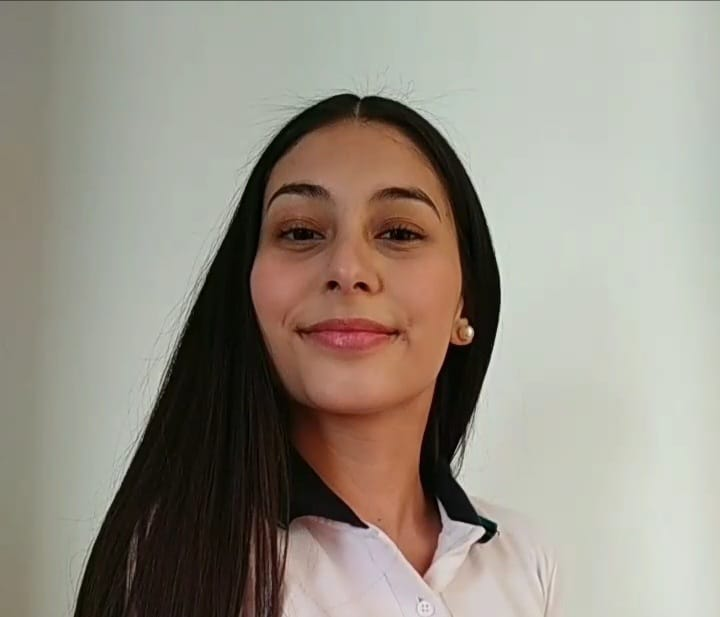

Curriculum Vitae
Antonia Belén Zúñiga Sepúlveda

SOBRE MÍ
Persona amable, respetuosa, responsable y comprometida con el trabajo, proactiva y con
capacidad de trabajar de forma independiente como también en equipo.
Capaz de trabajar en condiciones de alta presión y con deseos de aprender.
DATOS PERSONALES
- Teléfono: (+56) 9 6627 3639
- Correo: antoniazuniga.sepulveda@gmail.com
- Dirección: IV Centenario 1685, Dpto 403, Las Condes, Santiago, Chile.
FORMACIÓN ACADÉMICA
- 2017 – 2020 Enseñanza Media: Colegio San Francisco del Alba, Las Condes, Chile.
- 2009 – 2016 Enseñanza Básica: Colegio San Francisco del Alba, Las Condes, Chile.
EXPERIENCIAS LABORALES
- Noviembre 2021 – A la fecha: Manicurista Particular, Santiago, Chile.
- Diciembre 2021 – Febrero 2022: Asistente en Cafetería AVAY, Bucalemu, Chile.
- Abril 2022 - Junio 2022: Promotora, Santiago, Chile.
IDIOMAS
Inglés – Nivel básico
CONOCIMIENTOS INFORMÁTICOS
Microsoft Office a nivel usuario intermedio.
Mi LinKedIn
Mi portafolio